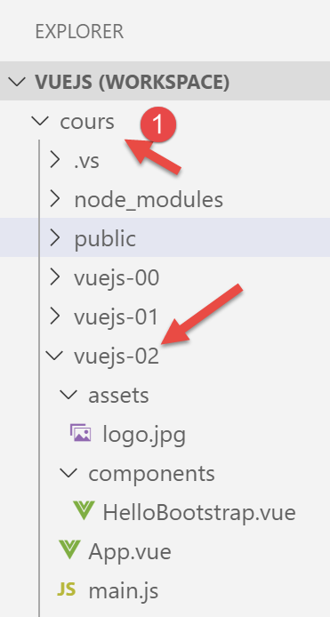
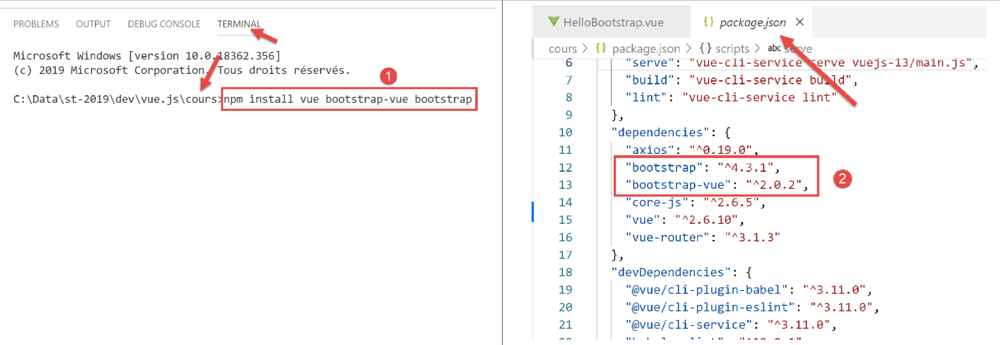
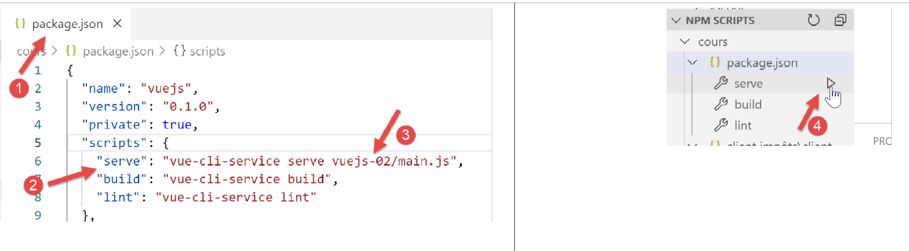

4. 项目 [vuejs-02]：使用 Bootstrap CSS 框架
[vuejs-02] 项目演示了在 [Vue.js] 项目中使用 Bootstrap 的方法。这是我们所有项目中都将采用的 CSS 框架。我们将使用 Bootstrap 的一个变体，即 [BootstrapVue] [https://bootstrap-vue.js.org/]。
项目目录结构如下：

注意：在下文文档中，[vuejs] 文件夹已重命名为 [cours] [1]。
4.1. 安装 [BootstrapVue] 框架
[BootstrapVue] 是一个框架，我们使用 [npm] 工具将其添加到项目中：

- 因此，在 [1] 中，我们正在安装两个框架：[Bootstrap] 及其变体 [BootstrapVue]；
- 在 [2] 中，这两个依赖项均出现在 [package.json] 文件中；
4.2. [main.js] 脚本
主脚本 [main.js] 如下所示：
// imports
import Vue from 'vue'
import App from './App.vue'
// plugins
import BootstrapVue from 'bootstrap-vue'
Vue.use(BootstrapVue);
// bootstrap
import 'bootstrap/dist/css/bootstrap.css'
import 'bootstrap-vue/dist/bootstrap-vue.css'
// configuration
Vue.config.productionTip = false
// instanciation projet [App]
new Vue({
render: h => h(App),
}).$mount('#app')
- 第 2 行：导入 [Vue] 框架；
- 第 3 行：导入主视图；
- 第 6 行：导入 [BootstrapVue] 框架；
- 第 7 行：该框架设计为 [Vue] 框架的插件。第 7 行将此插件引入 [Vue] 框架；
- 第 10–11 行：导入来自 [Bootstrap] 和 [BootstrapVue] 框架的 CSS 文件；
- 因此，第 5–11 行完全用于使用 [BootstrapVue]。其余代码与上一段中看到的完全相同；
4.3. [App.vue] 组件
<template>
<b-container>
<b-card>
<!-- Bootstrap Jumbotron -->
<b-jumbotron>
<!-- ligne -->
<b-row>
<!-- colonne de largeur 4 -->
<b-col cols="4">
<img src="./assets/logo.jpg" alt="Cerisier en fleurs" />
</b-col>
<!-- colonne de largeur 8 -->
<b-col cols="8">
<h1>Calculez votre impôt</h1>
</b-col>
</b-row>
</b-jumbotron>
<HelloBootstrap msg="Hello Bootstrap !" />
</b-card>
</b-container>
</template>
<script>
import HelloBootstrap from "./components/HelloBootstrap.vue";
export default {
name: "app",
components: {
HelloBootstrap
}
};
</script>
评论
- 第 1–21 行：所有 <b-xx> 标签均来自 [BootstrapVue] 框架；
- 第 2、20 行：<b-container> 标签定义了一个 Bootstrap 容器。在此容器内，我们可以使用 <b-row> 标签定义行，使用 <b-col> 标签定义列；
- 第 3、19 行：<b-card> 标签定义了一个 Bootstrap “卡片”。视觉上，它呈现为一个带有边框的矩形；
- 第 5 行、第 17 行：<b-jumbotron> 标签可用于突出显示页面中的某个区域，本例中为一张图片和一些文本。我们将在各个项目中使用它作为项目的视觉标识；
- 第 7 行：<b-row> 标签定义了一行；
- 第 9–11 行：<b-col> 标签定义上一行中的一个列。Bootstrap 为每行分配 12 个列。[cols=’4’] 属性表示该 <b-col> 列将占用这 12 个列中的 4 个；
- 第 10 行：一张图片
- 第 13–15 行：一个将占用该行 12 个列中的 8 个列的列。我们在其中放置了一些文本；
- 第 18 行：使用名为 [HelloBootstrap] 的组件，并带有名为 [msg] 的属性；
- 第 24–33 行：组件的 <script> 部分；
- 第 29–31 行：导出第 18 行中使用的 [HelloBootstrap] 组件。为了被识别，必须在第 25 行中导入它；
结果如下：

- 在 [1] 中，是 <b-card> 标签；
- 在 [2] 中，是 <jumbotron> 标签；
- 在 [3] 中，4 列图片；
- 在 [4] 中，8 列文本；
4.4. [HelloBootstrap]
[HelloBootstrap] 是以下组件：
<template>
<div>
<!-- message on green background -->
<b-col cols="12">
<b-alert show variant="success" align="center">
<h4>[vuejs-02] : bootstrap</h4>
</b-alert>
</b-col>
<!-- message on yellow background -->
<b-col cols="12">
<b-alert show variant="warning" align="center">
<h4>{{msg}}</h4>
</b-alert>
</b-col>
</div>
</template>
<script>
export default {
name: "HelloBootstrap",
props: {
msg: String
}
};
</script>
评论
- 第 3 行：<b-alert show> 标签会显示一个彩色矩形，通常包含文本（第 6 行）。[variant] 属性允许您选择警报类型。每种警报类型都有不同的背景颜色。[success] 变体的颜色为绿色。[align] 属性允许您对齐警报文本（左对齐、右对齐或居中对齐）。 请注意，显示提示必须使用 [show] 属性。若缺少此属性，提示将不可见；
- [variant] 的可能取值：
- [primary]: 蓝色；
- [secondary]：灰色；
- [success]：绿色；
- [danger]：浅红色；
- [警告]：黄色；
- [信息]：青绿色；
- [light]: 无背景色;
- [dark]：比 [secondary] 稍深的灰色；
- 第 12 行：[msg] 是 [HelloBootstrap] 组件的参数（第 21–23 行）；
视觉输出如下：

- [1]：<b-alert show variant='success'> 标签；
- [2]: <b-alert show variant='warning'> 标签；
4.5. 运行项目
要运行该项目，首先修改 [package.json] 文件：

- 在 [3] 中，修改 package.json 文件 [1] 中 [serve] 命令 [2] 执行的脚本；
- 在 [4] 中，运行该项目；
注意：下文中我们将使用 BootstrapVue 框架的标签，其形式为 <b-something>。这并非强制要求。您也可以使用原始的 Bootstrap 框架标签。它们在 [Vue.js] 模板中同样有效。因此，习惯使用 Bootstrap 标签的开发者可以继续使用它们。